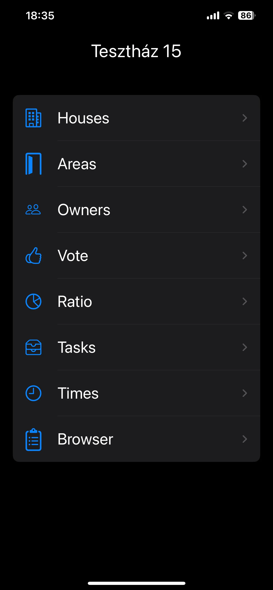
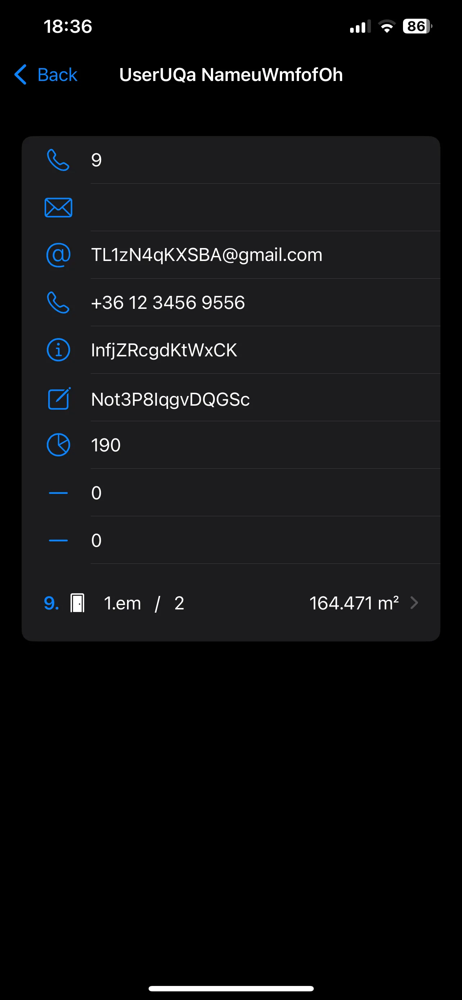
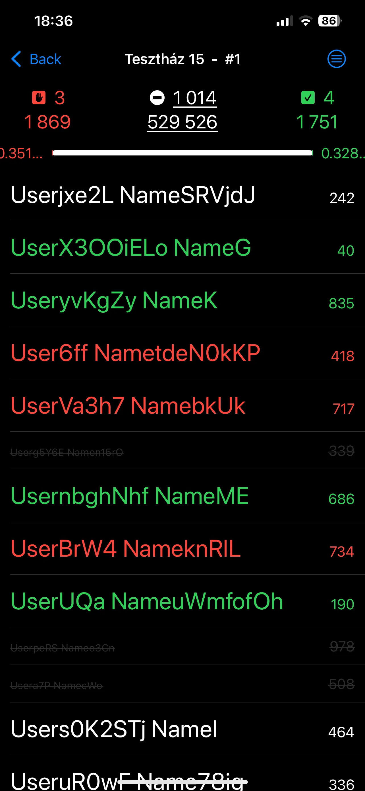

For caretakers & condominium administrators
Every building.
Connected.
CaseMaster is being developed for the people who look after a building's affairs. The aim is to bring people, premises, inventory, decisions and everyday work into one connected record, across one building or several.
In development · Not yet released.

The building and the details behind it
Keep the connections in view.
Looking after a condominium means keeping track of people, rooms, objects, documents and the things that happen around them. CaseMaster is intended to connect those records, so information can be found in its proper context.
The following features are under development. The screenshots show early work with test records, rather than a finished application.

People. Places. Objects. Events.
A record with context.
The planned record system brings the building's information together and links related details instead of leaving them scattered across separate lists.
-
People and premises
Keep records of owners, residents and other contacts, together with buildings, units, rooms and shared areas.
-
Objects and inventory
Register objects and maintain an inventory, with links to the places and information associated with them.
-
Events that belong somewhere
Connect an event to the relevant names, locations and dates, so you can follow what happened, where and when.
Ownership shares and configurable rules
See what each vote represents.
The voting tools are being built to calculate vote weights from recorded ownership shares. You can see an owner's percentage share and the weight of their vote without repeatedly working out the proportions by hand.
The calculation rules will be configurable, so the tally can follow the settings chosen for the building and the vote.
Keeping the ownership information and the votes together makes it easier to review how the recorded result was calculated.

The everyday work behind the building
Make the work easier to account for.
CaseMaster is also being designed to keep the administrative side of the job connected to the building it belongs to, with separate records for tasks, calls, documents and correspondence.
- Work, calls and time
- Record the time spent on the building, with each job and phone call logged separately. Prepare monthly or yearly summaries of recorded phone and administrative costs.
- A searchable document record
- Register and organize the building's documents so they can be retrieved later and kept alongside the matters they relate to.
- Group and individual correspondence
- Planned communication tools include group letters and individual reminders, such as a notice about outstanding common charges.
- More than one building
- Manage several buildings, keeping each property's people, premises, work and records in their own context.
Future development plans
From your records to a shared view.
These are future plans for CaseMaster. Desktop synchronization, website generation and the dedicated server are not available features yet.
- Desktop synchronization
- Synchronize with a desktop application to continue managing the building's records on a larger screen.
- A website for residents and owners
- Generate a website for sharing documents and reports, with public material and password-protected content for residents and owners.
- A dedicated server
- A server for managing sensitive building-related data is part of the longer-term plan.
CaseMaster is not yet finished. The application and its planned features are in development.